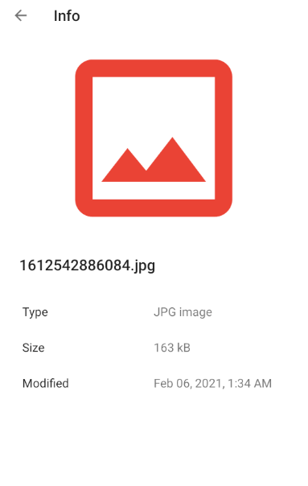

안드로이드 targetSdkVersion 30으로 올리기(Scoped Storage)
Android 11(R)은 Android 6.0(M,Marshmallow)이후로 가장 큰 변화가 생긴 버전이 아닐까 합니다.
Scoped Storage 적용
Android 10(Q) 발표당시 안드로이드 개발자를 공포로 몰아넣었던 Scoped Storage의 유예기간이 종료되었습니다. targetSdkVersion 29를 적용할때 Scoped Storage를 무시할 수 있도록 제공된 requestLegacyExternalStorage는 targetSdkVersion 30이 적용되면 Android 11(R) 이상 디바이스에서 무시됩니다.
대신 또 다른 일회성 유예가 추가되었습니다. preserveLegacyExternalStorage라는 플래그입니다. 이 플래그를 적용하면, 기존에 사용하던 파일을 이전 할 수 있도록 예외처리됩니다. 하지만 첫 설치 또는 앱 삭제후 재설치한 경우에는 예외가 적용되지 않습니다.
Android 9(O,Oreo)이전까지 개발자들은 "WRITE_EXTERNAL_STORAGE"권한 하나만 얻으면 뭐든 할 수 있었습니다. external storage의 루트에 자기앱이름을 따서 폴더를 만들어서 갤러리에 보여줄 파일을 다운받거나 생성하기도 하고, 그 하위나 또 다른 은밀한?곳에 "."(dot)으로 시작하는 폴더와 ".nomedia"파일을 이용해서 (사용자 몰래) 파일을 생성한 경험이 있을 것 입니다.
targetSdkVersion 30 을 적용하는 순간 WRITE_EXTERNAL_STORAGE는 완전히 무시됩니다.
지금까지는 WRITE_EXTERNAL_STORAGE을 요청하고 승인받으면, 자동으로 READ_EXTERNAL_STORAGE를 획득 할 수 있었기 때문에 READ_EXTERNAL_STORAGE를 암묵적으로 따로 처리 하지 않은 경우를 많이 찾아 볼 수 있었습니다. 이런 경우 onRequestPermissionsResult에서 WRITE_EXTERNAL_STORAGE는 항상 PERMISSION_DENIED이기 때문에, 다시 권한을 사용자에게 요청하는 교착상태에 빠질 수 있습니다.
솔루션 : 앱 외부공간에 파일을 쓸 일이 있다면, 안드로이드 Q미만에서는
WRITE_EXTERNAL_STORAGE,READ_EXTERNAL_STORAGE를 사용하고 Q이상에서는READ_EXTERNAL_STORAGE만 요청하도록 분기해야 합니다.
솔루션 :
requestLegacyExternalStorage를 적용하면 Android 10 디바이스에서WRITE_EXTERNAL_STORAGE를 계속 사용 할 수 있지만maxSdkVersion="28"을 명시하여 Q미만과 Q이상으로 구분하는 것이 좋을 것 같습니다. 결국은 사용자의 환경은 Android 11로 넘어 갈 것이고Scoped Storage대응을 미루어야 할 이유는 없습니다.<uses-permission android:name="android.permission.WRITE_EXTERNAL_STORAGE" android:maxSdkVersion="28" />
매번 이야기 하기가 번거롭기 때문에 용어를 정리하겠습니다. Scoped Storage 적용된 상태라는 말은 targetSdkVersion 29에서 requestLegacyExternalStorage를 사용하지 않았거나 targetSdkVersion 30을 적용한 앱을 Android 10 단말에서 사용하는 상태를 말합니다.
파일 생성과 쓰기 방법이 변경 되었습니다.
예를 들어 아래처럼 메모리카드 루트폴더에 폴더를 생성하고 파일쓰기가 가능했지만, 이제 WRITE_EXTERNAL_STORAGE가 허용되지 않으니 Scoped Storage가 적용 된 상태라면 아래의 코드는 파일을 생성 할 수 없습니다. 아마도 open failed: ENOENT (No such file or directory) 같은 에러가 발생할 것 입니다.
val path = Environment.getExternalStorageDirectory().getAbsolutePath()+"/tmp"
....
File(path,filename) // case #1
대신 앱 영역(apps’ private directories)에 파일을 생성하는데 제한은 없습니다.
val path = context.getDir("tmp", Context.MODE_PRIVATE).getPath()
....
File(path,filename) // case #2
Scoped Storage 적용되지 않은 상태에서는 새롭게 생성한 이미지나 미디어 파일을 컨텐츠 프로바이더를 이용하여 갤러리에 노출하기 위해서는 아래처럼 contentResolver에 파일을 등록하도록 하였습니다. 코드의 문맥을 보면 파일의 절대경로는 별도로 존재하고 DB에 해당 파일의 row를 추가하는 형태 였습니다.
val contentValues = ContentValues()
....
contentValues.put(MediaStore.Images.Media.DATA, file.absolutePath)
contentResolver.insert(MediaStore.Images.Media.EXTERNAL_CONTENT_URI, contentValues) // case #3
Scoped Storage 적용된 상태에서 case #2의 형태로 생성한 파일생성하고, case #3의 코드로 미디어를 등록하면 되지않을까하고 한번 해보았지만 역시나 동작하지않았습니다. 갤러리앱에 썸네일이 추가되어 추가적인 커맨드를 수행하면 되지 않을까 했지만, 단순히 DB에 row가 추가 되었고 실제 파일에 연결되진 않았습니다. 권한에의해 링크가 깨진 상태라고 생각 하면 될 것 같네요. 리눅스의 파일권한을 생각하시면 될 것 같습니다.

Scoped Storage 적용된 상태에서 MediaStore를 이용하여 이미지,비디오,오디오,다운로된 파일의 경로에 추가 하기 위해서는 아래의 코드 처럼 작성해야 합니다.
ContentValues contentValues = new ContentValues()
contentValues.put(MediaStore.Images.Media.IS_PENDING, 1) // I/O는 오래 걸리니... 일단 PENDING 시켜놓고
contentValues.put(MediaStore.Images.Media.RELATIVE_PATH, Environment.DIRECTORY_PICTURES) // 경로를 결정합니다.
....
val uri = getContentResolver().insert(MediaStore.Images.Media.EXTERNAL_CONTENT_URI, contentValues)
getContentResolver().openFileDescriptor(uri, "w").use { // 앞서 얻은 uri와 ContentResolver를 이용해서 접근하도록 합시다.
val outputStream = FileOutputStream(it!!.getFileDescriptor())
...
outputStream.close()
}
contentValues.clear()
contentValues.put(MediaStore.Images.Media.SIZE, file.length())
contentValues.put(MediaStore.Images.Media.IS_PENDING, 0) // 작업이 끝나면 PENDING을 해제합니다.
getContentResolver().update(fileUri, contentValues, null, null)
애초에 파일 생성을 getContentResolver().insert({Columns}.EXTERNAL_CONTENT_URI, contentValues)로 생성해야합니다. 파일을 생성하면 바로 콘텐츠 프로바이더에서 접근 가능하기 때문에 IO를 고려하며 IS_PENDING값을 1로 우선 insert하고 완료되면 0으로 업데이트합니다. 컨텐츠가 저장되는 폴더는 {Columns}.RELATIVE_PATH에 값을 적절한 값을 넣어주면 됩니다.
| Type | Columns | RELATIVE_PATH |
|---|---|---|
| 이미지 | MediaStore.Images.Media | Environment.DIREC TORY_PICTURES Environment.DIRECTORY_DCIM |
| 영상 | MediaStore.Video.Media | Environment.DIRECTORY_MOVIES |
| 음악 | MediaStore.Audio.Media | Environment.DIRECTORY_MUSIC |
| 다운로드 | MediaStore.Downloads | Environment.DIRECTORY_DOWNLOADS |
https://developer.android.com/training/data-storage/shared/media?hl=ko#toggle-pending-status
// res/raw폴더에 source파일을 추가하고 실행하면 실제로 동작하는 코드입니다.
val audioCollection = MediaStore.Audio.Media
.getContentUri(MediaStore.VOLUME_EXTERNAL_PRIMARY)
val songDetails = ContentValues().apply {
put(MediaStore.Audio.Media.DISPLAY_NAME, "My Workout Playlist.mp3")
put(MediaStore.Audio.Media.IS_PENDING, 1)
}
val songContentUri = contentResolver.insert(audioCollection, songDetails)!!
contentResolver.openFileDescriptor(songContentUri, "w", null)?.use { pfd ->
val inputStream = resources.openRawResource(R.raw.source)
val outputStream = FileOutputStream(pfd.fileDescriptor)
while (true) {
val data = inputStream.read()
if (data == -1) {
break
}
outputStream.write(data)
}
inputStream.close()
outputStream.close()
}
songDetails.clear()
songDetails.put(MediaStore.Audio.Media.IS_PENDING, 0)
contentResolver.update(songContentUri, songDetails, null, null)